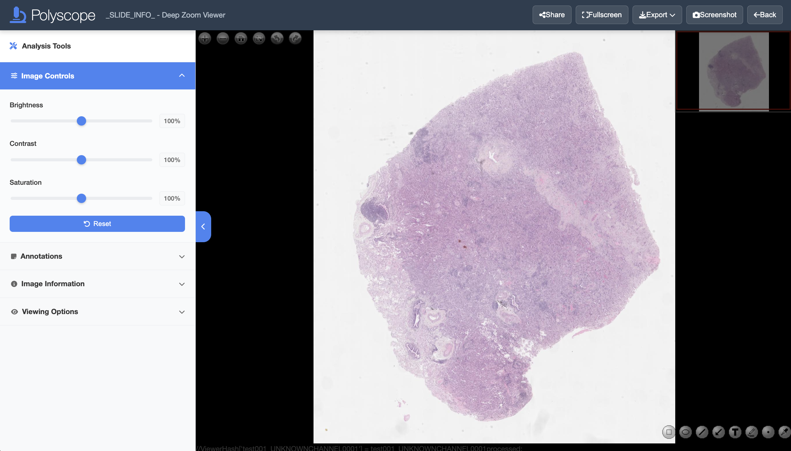
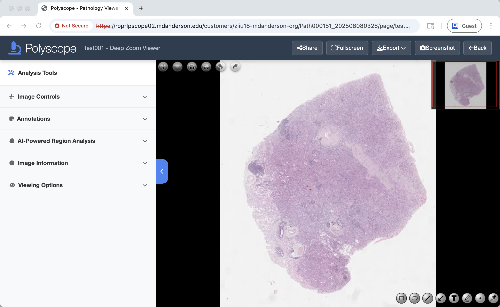

Pages > Image > View Image
Abstract
This page details controls and functions when viewing images on the Image page.
Overview
Click on the boxed regions in the screenshot below to learn more about each component:

View Modes
The goal of the Image Page is to let users view and annotate images. This page can be configured to two modes:
- Polyzoomer: referring to a single image view.
- Multizoomer: referring to a combination of multiple image views.
Before you start, make sure you choose a set of annotation shapes and colors to be used for each semenatic class to ensure consistency. Once an annotation is created, it cannot be edited (shape or color) unless it is deleted and recreated.
View Controls
View Toolbar
You can control the displayed image view by mouse or keyboard. On the top left of the image view, you will find the following view control buttons:
- Click or or use mouse scroll to zoom. Double left click to zoom in.
- Drag with left mouse button to pan.
- Click to reset the view.
- Click to display the current image in full screen.
- Click or icons to rotate the image 90 degrees clockwise or counterclockwise, respectively.
In addition, keyboard offers the following alternative view controls:
- Press = or - to zoom in and out, respectively.
- Press Up, Down, Left, Right or W, A, S, D keys to pan.
- Press 0 to reset the view.
Image Controls
To adjust the displayed image brightness, contrast, and saturation, using the sliders on the Analysis Tools side panel. Click the Reset button to reset the properties.
Navigator
The navigator is at the top right corner of the image view. The navigator enables quick random jumping to locations on the image, by clicking on the corresponding locations on the displayed thumbnail in the navigator.
Download View (Screenshot)
Polyscope image page supports multiple formats and contents of screenshot export. Options can be accessed throught the Screenshot button on the top right of the page.
- Entire webpage area: Select
 Full Page capture area;
Full Page capture area; - Viewer area: Select Viewer Only (UI components will be excluded);
- Cropped viewer area: Select Select Region.

Next, select the file format from the Format dropdown menu PNG, JPEG, WebP. PNG is recommended for the best quality. For JPEG or WebP format, you can make trade-off between file size and image quality by adjusting the Quality slider, where 100% means best image quality which requires the largest file size.
Finally, click the Take Screenshot button and save the screenshot using the popup file saving dialog.
Alternatively, right click over the image area and select the Save image As... context menu option. Supported file formats is png. This option is a shortcut for viewer area screenshot.
Copy View
You can also copy the content of the current viewing area to the clip board by selecting the Copy Image menu option in the right click context menu.
Link Sharing
You can share the Polyscope image pages with others for collaboration through URL links. The URL can link to the image or include the current viewing area of the image.
The Share button on the top right offers convenient sharing options.
A Polyzoomer/Multizoomer link might look like this:
https://polyscope.mdanderson.org/customers/jsmith1-mdanderson-org/Path000001_202402061731/page/test001/index.html?slide=slide1_UNKNOWNCHANNEL0001&patient=test001&channel=_UNKNOWNCHANNEL0001&x=0.5000&y=0.5714&z=0.6286
- To share the page with default view, use the truncated URL
https://polyscope.mdanderson.org/customers/jsmith1-mdanderson-org/Path000001_202402061731/page/test001(you may omit theindex.htmlpart); - To share the current viewing area, use the entire URL which includes queries after
?.
Warning
The link is publicly accessible, so it is advisable to keep it confidential.
Tip
If you need to share an image with multiple independent users, consider creating multiple Polyzoomers/Multizoomers from the same file.